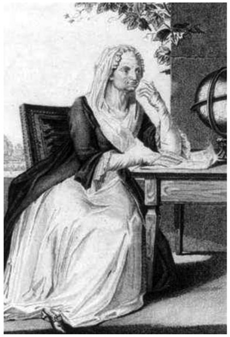
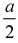
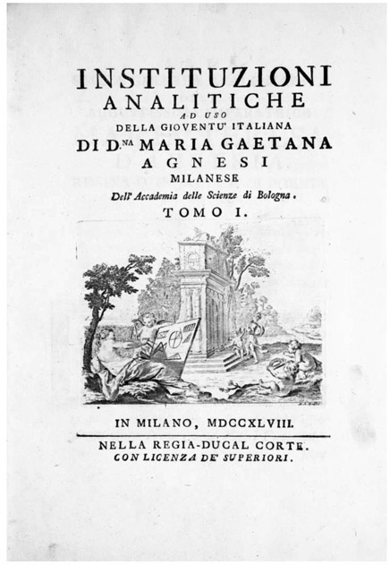
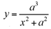
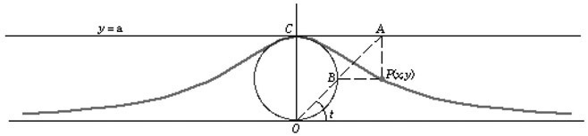
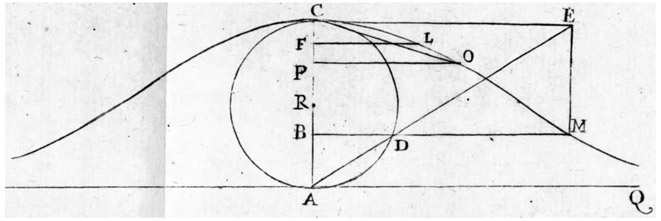

Maria Gaetana Agnesi: Italian (1718–1799)
Looking at the history of mathematics, we can see readily that it is overloaded with male mathematicians. This prompts us to wonder, who was the first female mathematician in the Western world to receive an international reputation? Most people would consider Maria Gaetana Agnesi to fit that role. She was born on May 16, 1718, in Milan, which was then a part of the Austro-Hungarian Empire, and is now a city in Italy. She grew up in a wealthy household as the oldest child of a prosperous silk merchant, who fathered twenty-one children. The first signs of her prodigy status appeared at age five, when she spoke Italian and French. By age nine, she further demonstrated her talent by mastering several modern languages, as well as Latin, Greek, and Hebrew. Within the next few years, she mastered mathematics.
Recognizing her talents, her father would invite friends and have her perform by displaying her vast intelligence. Interestingly, in 1738, when she was twenty years old, a series of essays were published, Propositiones philosophicae (Propositions of Philosophy), which were based on her presentations at these forums. In 1748, she published Instituzioni analitiche ad uso della gioventù italiana (Analytical Institutions for the Use of Italian Youth), which encompassed two large volumes, wherein she presented her treatment of algebra and both integral and differential calculus (see fig. 24.2). This work was well received by mathematicians all over Europe. A committee of the renowned Académie des Sciences in Paris reported on Instituzioni analitiche ad uso della gioventù italiana:

Figure 24.1. Maria Gaetana Agnesi. (Engraving by G. A. Sasso after G. B. Bosio, Library of Congress.)
It took much skill and sagacity to reduce, as the author has done, to almost uniform methods these discoveries scattered among the works of modern mathematicians and often presented by methods very different from each other. Order, clarity and precision reign in all parts of this work. . . . We regard it as the most complete and best made treatise.1
One form of her fame came from a cubic curve known in Italian as versiera, which, over the years, has become confused with the word for “witch,” namely, versicra. Ultimately, this resulted in its English name, the Witch of Agnesi.
The bell-shaped curve, which we refer to as the Witch of Agnesi, can be constructed as follows: Start with a circle of diameter a, centered at the point (0,

) on the y-axis, as shown in figure 24.3. Then select a point A on the line y = a, and draw the line segment AO, with its intersection with circle O at point B. Let point P be the point where the vertical line through A intersects the horizontal line through B. The curve, called “Witch of Agnesi,” is then traced by point P as A moves along the line y = a.
Figure 24.2.
The curve has the equation yx2 = a2(a – y), or

.Figure 24.4 shows the curve in its original rendering.
This entire work so impressed Pope Benedict XIV that, in 1750, he appointed Agnesi to the position of professor of mathematics at the University of Bologna. Soon thereafter, she increasingly gravitated to religious studies and never actually visited Bologna again. After her father died in 1752, Maria Gaetana Agnesi completely dedicated herself to religious studies and charitable work. She died on January 9, 1799, in one of the charity poor-houses that she directed.

Figure 24.3.

Figure 24.4. “Witch of Agnesi.” (Maria Gaetana Agnesi, Instituzioni analitiche ad uso della gioventù italiana, 1748.)